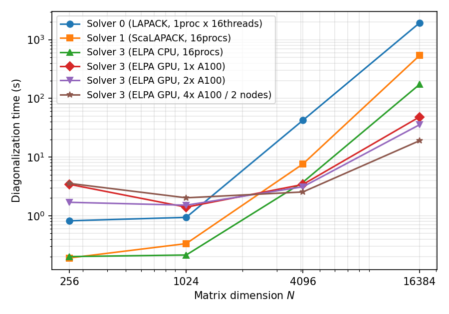

6.7. Parallel full diagonalization¶
This section describes the parallel algorithms used by the full
diagonalization method (method="FullDiag") and compares the speed of
the available backends. See CalcMod file for the specification
of the input keywords (Solver, ExpecMode, NGPU).
6.7.1. Computation pipeline¶
A full diagonalization run consists of four stages:
Hamiltonian generation: the \(N \times N\) Hermitian matrix \(H_{ij} = \langle \psi_i | \hat{H} | \psi_j \rangle\) is built in the real-space configuration basis.
Diagonalization: all eigenvalues and eigenvectors are computed by the backend selected with the
Solverkeyword (LAPACK / ScaLAPACK / MAGMA / ELPA).Eigenvector redistribution (distributed
Solver 1/3runs withExpecMode 1/2): the eigenvectors are rearranged from the distribution used by the solver into a distribution suited for observable evaluation.Observable evaluation and output: for each eigenstate \(|\Phi_i\rangle\), expectation values \(\langle \Phi_i | \hat{A} | \Phi_i \rangle\) (energy, fluctuations, Green functions) are computed and written. The evaluation kernel is selected with
ExpecMode.
6.7.2. Distributed Hamiltonian generation (Solver 3)¶
With Solver 0/1/2 every rank holds a replicated copy of the
full \(N \times N\) matrix, so the per-process memory is
\(O(N^2)\). When Solver 3 (ELPA) runs with more than one MPI
process, each rank generates and stores only its own contiguous column
block (panel) of the matrix. The peak memory per rank becomes
\(O(N^2/P)\) (\(P\): number of processes), so larger dimensions
become reachable by adding processes. As a measured example, for the
8-site Hubbard chain (\(N=4900\)) the replicated layout takes
1.93 GB in one process while the distributed layout takes 0.63 GB per
rank with four processes.
The generated panels are then redistributed by MPI communication into the two-dimensional block-cyclic layout required by ELPA (and by the ScaLAPACK descriptors). The process grid \(n_{\rm prow} \times n_{\rm pcol}\) is chosen as close to square as \(P\) allows. If the matrix dimension \(N\) is smaller than \(\max(n_{\rm prow}, n_{\rm pcol})\), the run stops before the ELPA diagonalization with an error asking to reduce the number of ranks.
6.7.3. Diagonalization with ELPA¶
ELPA (Eigenvalue soLvers for Petaflop Applications) is a parallel
library for dense eigenvalue problems that uses the same
two-dimensional block-cyclic distribution as ScaLAPACK while achieving
higher parallel efficiency. \({\mathcal H}\Phi\) uses the complex
Hermitian solver and selects the 1-stage/2-stage algorithm itself: GPU
runs always use 1-stage, and CPU runs use 2-stage when the block size
can take its default value, falling back to 1-stage when the matrix is
small relative to the process grid and the block size is capped.
Setting NGPU \(\geq 1\) enables the GPU version; the
process-to-GPU assignment is handled by ELPA (one process per GPU is
the recommended launch configuration; requires ELPA 2023.11.001 or
later). NGPU is an enablement flag and does not physically limit
the devices used — control the assignment through the job scheduler or
CUDA_VISIBLE_DEVICES.
6.7.4. State-task-parallel observable evaluation (ExpecMode 1)¶
In the conventional evaluation (ExpecMode 0) the eigenstates are
processed one by one with all ranks cooperating, which requires MPI
collectives (eigenvector gather and reductions) for every state. Since
the number of states equals \(N\), this communication dominates the
run time, especially on multiple nodes.
With ExpecMode 1 the eigenvectors are redistributed after the
diagonalization into a “state panel” layout in which each rank owns a
contiguous block of eigenstates, and each rank then evaluates its own
states independently, with no communication inside the per-state
loop. The physical quantities (zvo_phys*.dat) are collected from
the ranks only once at the end. The aggregate Green-function output
(OutputGreenFormat 1) is written to per-rank partial files, and
rank 0 merges them only after the manifests of all ranks report
success, publishing the final file transactionally via a temporary
file and rename (a design that avoids publishing an incomplete final
file on failure).
6.7.5. Trace-kernel evaluation (ExpecMode 2)¶
Even with ExpecMode 1, the one-body and two-body Green functions
are evaluated by a loop that applies each operator state by state,
paying the per-operator basis-scan overhead \(N\) times. With
ExpecMode 2, for each operator \(\hat{A}\) the basis mapping
(target state index \(k \to k'\) and amplitude) is precomputed
once, and all owned eigenstates are streamed through a dense loop
over that mapping. The per-operator overhead is thus amortized over the
number of states, which pays off when one- and two-body Green functions
are evaluated for many eigenstates.
The supported models for these two Green-function kernels are
Hubbard/HubbardGC and spin-1/2 Spin/SpinGC. For
unsupported models, and under certain runtime conditions (evaluator
sharing with the N-body Green functions, no operators of a kind
defined, or the result buffer exceeding HPHI_TRACE_BUF_MAX_MB), the
affected quantity automatically falls back to the ExpecMode 1 path,
and the decision is reported by INFO lines just before the
observable evaluation.
As of this version, ExpecMode 2 also traces the energy/fluctuation
family (including the var column) with a separate CSR
(compressed-sparse-row) kernel: the Hamiltonian is precomputed once per
rank into a compact sparse matrix, and every owned eigenstate is
streamed through a sparse matrix-vector product instead of a full
mltply-style traversal. Unlike the Green-function kernels above,
the energy family is not limited to the four supported (model,
spin-representation) rows above — it supports Hubbard/HubbardGC
(including the particle-number-conserved HubbardNConserved variant),
tJ/tJGC (including tJNConserved), Kondo/KondoGC
(including KondoNConserved), and Spin/SpinGC
(including general spin). It does NOT support
SpinlessFermion/SpinlessFermionGC or any unknown model, which
fall back to ExpecMode 1. The energy family has three fallback
reasons overall, checked in order: the Hamiltonian was read from
InputHam, the model is unsupported, or the per-rank CSR buffer
would exceed HPHI_TRACE_BUF_MAX_MB (the same cap used for the
Green-function result buffers). The unsupported-model reason is exactly
what excludes a model from the supported set above, so once the model
IS supported only the InputHam and memory-gate reasons can still
apply. S2, NBodyG,
and AnomalousG remain on the ExpecMode 1 path in this version.
See the ExpecMode entry in CalcMod file for the full
fallback taxonomy and the exact INFO wording.
Why the CSR Hamiltonian is replicated on every rank. In the
state-panel layout each rank owns a block of complete eigenvectors and
evaluates them with no communication inside the per-state loop (that is
the whole point of ExpecMode 1/2). Computing \(y = H x\) for
a locally-complete \(x\) therefore needs every row of \(H\) on
that rank, so the CSR is built for the full column range on each rank.
Distributing the CSR (each rank holding only \(N/P\) rows, and about
\(\mathrm{nnz}/P\) nonzeros)
would force per-state communication to apply the distributed operator to
a local full vector — reintroducing exactly the collective cost the
state-panel design removes. Consequently the per-rank CSR does not
shrink as \(P\) grows. The CSR is nonetheless compact: it is sparse,
with \(\mathrm{nnz} \approx T \cdot N\) emitted entries where
\(T\) is the number of Hamiltonian terms contributing per column —
roughly linear in \(N\) for a fixed model, with \(T\) itself
growing only slowly with system size (e.g. \(T \approx 21\) for the
Hubbard chain at \(L=10\), and \(T \approx L+1\) for an
\(L\)-site transverse-field spin chain). The buffer capacity and the
memory gate are sized on these emitted entries (the merged count
\(\mathrm{rowptr}[N]\) after summing duplicates can be smaller). Its
dominant colidx/val storage is
\(\approx 24 \times \mathrm{nnz}\) bytes (plus \(O(N)\)
row-pointer, work-vector, and diagonal-coefficient arrays) — about 32 MB
at \(N = 63504\). At moderate rank counts this is much smaller than
the \(O(N^2/P)\) eigenvector state panel; but because the CSR is
\(P\)-independent while the panel shrinks with \(P\), the CSR’s
fixed per-rank cost becomes relatively more significant as \(P\)
grows and can dominate at sufficiently large \(P\), or already at
moderate \(P\) for operator-dense inputs (large
InterAll/NBodyInterAll sets). Whenever the projected CSR exceeds
the per-rank HPHI_TRACE_BUF_MAX_MB gate, the energy family falls back
to ExpecMode 1 and reports it.
6.7.6. Speed comparison¶
Single node¶
A spin-1/2 chain in a transverse field (model="SpinGC",
lattice="chain", \(J=1\), \(\Gamma=0.5\),
\(L=8,10,12,14\), dimension \(N=2^L=256,\dots,16384\)) was
measured on one node of the ISSP supercomputer kugui (AMD EPYC 7763,
Intel compilers + Intel MPI + MKL). Every CPU configuration uses 16
cores in total: Solver 0 uses 1 process \(\times\) 16 threads,
Solver 1/3 use 16 processes \(\times\) 1 thread. The GPU
runs use GPU nodes of the same system (EPYC 7763 + 2 \(\times\)
NVIDIA A100-SXM4-40GB per node) with one process per GPU: one GPU =
1 process (NGPU 1), two GPUs = 2 processes on one node
(NGPU 2), and four GPUs = 2 nodes \(\times\) 2 processes
(NGPU 2, InfiniBand + Intel MPI between the nodes).
Diagonalization time (LapackDiag section of CalcTimer.dat,
seconds):
\(N\) |
Solver 0 (LAPACK) |
Solver 1 (ScaLAPACK) |
Solver 3 (ELPA, CPU) |
Solver 3 (GPU \(\times\) 1) |
Solver 3 (GPU \(\times\) 2) |
Solver 3 (GPU \(\times\) 4, 2 nodes) |
|---|---|---|---|---|---|---|
256 |
0.82 |
0.19 |
0.20 |
3.42 |
1.69 |
3.55 |
1024 |
0.94 |
0.33 |
0.21 |
1.40 |
1.51 |
2.02 |
4096 |
42.22 |
7.60 |
3.72 |
3.41 |
3.11 |
2.54 |
16384 |
1929.6 |
536.9 |
172.6 |
48.23 |
35.51 |
18.97 |
{kind=link}

Fig. 6.1 Diagonalization time versus matrix dimension \(N\) (log-log).¶
At \(N=16384\), Solver 3 (ELPA CPU, 16 processes) is about 11
times faster than Solver 0 (LAPACK) and about 3.1 times faster
than Solver 1 (ScaLAPACK). The GPU runs pay an initialization and
transfer overhead at small \(N\), break even with the 16-core CPU
runs around \(N \sim 4000\), and reach about 3.6 times the ELPA
CPU speed (about 40 times LAPACK) with one A100, about 4.9 times
(about 54 times LAPACK) with two A100s, and about 9.1 times (about
102 times LAPACK) with four A100s on 2 nodes at \(N=16384\). The
2-to-4-GPU (inter-node) step scales by about 1.87, close to ideal. At
\(N \lesssim 4000\), adding GPUs does not help — scale the GPU
count with the matrix size.
Observable-evaluation time (Solver 3 CPU with 16 processes,
aggregate one- and two-body Green-function output for all states,
CalcPhys section of CalcTimer.dat, seconds):
\(N\) |
ExpecMode 0 |
ExpecMode 1 |
ExpecMode 2 |
|---|---|---|---|
256 |
0.38 |
0.11 |
0.06 |
1024 |
2.44 |
0.21 |
0.19 |
4096 |
26.00 |
1.67 |
1.37 |
16384 |
424.5 |
26.40 |
20.84 |

Fig. 6.2 Observable-evaluation time versus matrix dimension \(N\) (log-log).¶
At \(N=16384\), ExpecMode 1 is about 16 times faster than
ExpecMode 0 (scaling with the process count), and ExpecMode 2
gains another factor of about 1.3 from the trace kernels.
Multiple nodes¶
Total run time for the 8-site Hubbard chain (\(N=4900\)) with one-
and two-body Green-function output for all states, Solver 3 (CPU),
on 2 nodes \(\times\) 4 processes of kugui (AMD EPYC 7763,
InfiniBand, Intel MPI):
ExpecMode |
Run time (2 nodes, 8 processes) |
|---|---|
0 (conventional) |
11 min 52 s |
1 (state-task parallel) |
52 s |
2 (trace kernels) |
49 s |
The ExpecMode 0 run time is dominated by the per-state inter-node
collectives (eigenvector gather and reductions \(\times N\)
states); ExpecMode 1/2 remove exactly this cost (about 14x
here). On multiple nodes we strongly recommend ExpecMode 1 or
higher.
Memory requirements¶
One complex double-precision \(N \times N\) matrix takes \(16 N^2\) bytes. The peak memory requirement per solver is roughly as follows (the coefficients are empirical, based on measured MaxRSS on kugui, and exclude fixed overhead such as the MPI runtime):
Solver 0/2: every process holds a replicated matrix and eigenvector set — about \(32 N^2\) bytes per process.Solver 1: the diagonalization is distributed but the matrix generation is replicated — about \(16 N^2 + 32 N^2 / P\) bytes per process (\(P\): number of processes). The replicated generation dominates, so at large \(N\) it needs more memory thanSolver 3.Solver 3(CPU): generation is also distributed — about \(64 N^2\) bytes for the whole job (roughly four matrix copies; \(64 N^2 / P\) per process).Solver 3(GPU): in addition to the host memory above, about \(40 N^2 / P\) bytes of device memory per GPU (complex matrix + eigenvectors + the real workspace of the tridiagonal stage).
\(N\) |
Solver 0 (per process) |
Solver 3 CPU (whole job) |
Solver 3 GPU (per GPU, \(P=4\)) |
|---|---|---|---|
16,384 |
8.6 GB |
17 GB |
2.7 GB |
63,504 |
129 GB |
258 GB |
40 GB (the A100-40GB limit) |
200,000 |
1.3 TB |
2.6 TB |
400 GB (infeasible at \(P=4\)) |
Maximum feasible size¶
The reachable matrix dimension \(N\) is limited mainly by memory (guidelines based on measurements on kugui):
CPU (Solver 3): the job-wide peak is about \(64 N^2\) bytes (roughly four simultaneous matrix copies). In practice \(N=63504\) (the 10-site Hubbard chain) completed on 4 nodes (128 processes) with a 23-minute diagonalization and about 67 GB/node (~91% parallel efficiency relative to the 16-rank baseline). Extrapolating with this model, about \(N \sim 2 \times 10^5\) (diagonalization ~3 h) is the practical ceiling on 16 nodes (~3.8 TB).
GPU (Solver 3): the matrix and the eigenvectors are distributed across device memories as well. On the complex 1-stage path of ELPA (2025.06) the peak is about \(40 N^2 / P\) bytes per GPU (the complex matrix and eigenvectors plus the real workspace of the tridiagonal stage). On 4 \(\times\) A100 40GB, \(N=48620\) works (199 s diagonalization) while \(N=63504\) stops with a device-memory allocation failure, consistent with this model’s boundary of \(N \approx 6.2 \times 10^4\). The ceiling grows as \(\sqrt{P}\) with the number of GPUs; beyond the available GPU count, use CPU nodes.
Guidelines¶
For small systems that fit in one process,
Solver 0(LAPACK) is the simplest choice.From a few thousand dimensions upward with several processes,
Solver 3(ELPA) wins on both diagonalization speed and memory (\(O(N^2/P)\) via distributed Hamiltonian generation). If GPUs are available,NGPUaccelerates it further. Note that theExpecMode 1/2observable-evaluation speedups are also available with distributedSolver 1runs.For observables, use
ExpecMode 2for the supported models andExpecMode 1otherwise (the results agree withExpecMode 0). When scaling up the process count for the \(O(N^2/P)\) memory win, note thatExpecMode 2’s energy CSR Hamiltonian is replicated per rank and does not shrink with \(P\) (see the replication note above); it is small for ordinary lattice models but sets a per-rank memory floor that matters at large \(P\) or for operator-dense inputs.